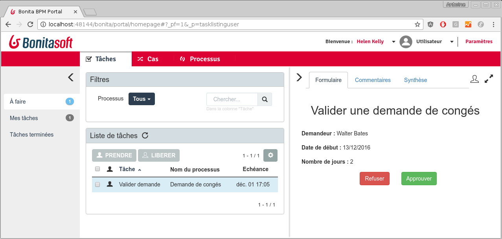
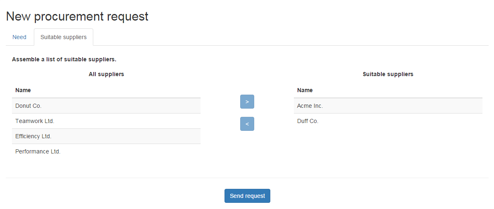
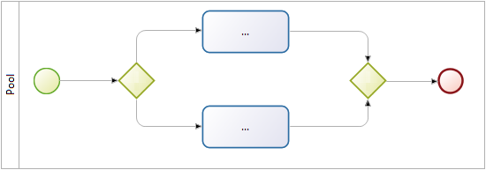

Programme
- Objectifs du BPM
- Composants de Bonita BPM
- Introduction au BPMN
- Données & Contrats
- D'avantage sur le BPMN
- Formulaires et Pages
- Acteurs
- Connecteurs
- Déploiement
Objectifs du BPM
Collaborer à la définition et à l'exécution des processus de l'entreprise
Suivre le bon déroulement des processus
Optimiser les processus
Composants de Bonita BPM
| Bonita Studio | ||
| Bonita Engine | } | Bonita Platform |
| Bonita Portal | ||
Bonita BPM Studio : éditeur de diagrammes
Bonita BPM Studio : UI Designer
Bonita BPM Engine
Responsable de l'exécution des processus (pas d'interface graphique)
Basé sur Java SE 7 / Java EE 6
Encapsulé avec le Portal dans une application web Java
Requiert :
- Serveur d'application Java
- Base de données transactionnelle compatible avec JDBC
Bonita BPM Portal
Interface web pour l'utilisateur final et l'administrateur
Présente la liste des tâches à réaliser
Permet de déployer et configurer des processus
Bonita BPM Portal : Forms
Affiche les formulaires créés avec le UI Designer
Servis dans le Portal Bonita ou intégré dans une application
Bonita BPM Portal : Applications
Permet le déploiement d'application métiers composées de pages personnalisées créées avec le UI Designer

Introduction au BPMN
Une notation standard (OMG) pour la modélisation des processus
Un processus est représenté par un Pool 
Les éléments essentiels :
 | Evénement de début |
 | Tâche humaine |
 | Tâche automatique/service |
 | Evénement de fin |
Les éléments sont reliés par des Transitions →
Exercice 1
Modélisation basique de processus
Téléchargez les instructions et les corrections à partir de ce lien:
Données
BDM (Business Data Model)
Accessible de partout, stocké dans une base métier
Usage: stocker les données manipulées par les instances de processus et/ou applications
Variables de processus & d'étapes
Accessibles depuis une seule instance de processus/étape, stockées dans la base moteur, archivées avec l'instance de processus
Usage: chainer l'exécution de connecteurs
Variables de formulaire
Accessibles depuis un formulaire, jamais persistées
Usage: manipuler et stocker les informations accessibles en lecture et en écriture dans un formulaire
Données
| BDM | Variables de processus & d'étapes | Variables de formulaire |
|---|---|---|
|
|
|
Documents : fichiers avec gestion des révisions, déclarés au niveau des processus
Contrats
Ensemble de paramètres d'entrée requis avec des règles de validation.
Les données envoyées par les formulaires doivent remplir des contrats pour :
- Instancier un processus
- Exécuter une tâche humaine
Contribue au découplage entre la logique métier et les interfaces graphiques.
Exercice 2
Ajout de données et spécification de contrats
D'avantage sur le BPMN
3 types de portes logiques :
 | Exclusive |
 | Parallèle |
 | Inclusive |
Une bonne pratique consiste à utiliser les portes de manière symétrique si possible:
Exercice 3
Contrôle dynamique du flux d'exécution grâce aux données
Formulaires & Pages
Créé dans le UI Designer à base de conteneurs et de widgets
Basé sur AngularJS et Bootstrap.
2 types de formulaires:
- Formulaires éditables qui doivent remplir un contrat
- Instanciation de processus
- Tâches humaines
- Formulaire de synthèse (lecture seule) défini au niveau du Pool
Widgets
Un ensemble de widget de base sont fourni par défaut (champ texte, menu déroulant, sélecteur de date...)
Des widgets personnalisés peuvent être créés avec le UI Designer
Exercice 4
Création de formulaires
Acteurs
Déclaré au niveau du Pool. Associé avec des Lanes ou des tâches humaines. 2 options d'implémentation :
| Avantages | Limitations | |
|---|---|---|
| Acteur | Toujours à jour par rapport à l'organisation | Association statique qui ne peut se baser sur des données métier |
| Filtre d'acteur | Association dynamique qui peut inclure des données métier | Calculé seulement une fois à l'instanciation d'une étape |
Exercice 5
Gestion d'acteurs
Connecteurs
Permet à un processus d'interagir avec le SI (à l'opposé des API Bonita)
Un catalogue de connecteurs standard est fourni dans le Studio.
Des connecteurs personnalisés peuvent être :
- Implémentés dans le Studio ou un IDE Java
- Importés depuis notre site communautaire
Exercice 6
Notification par le biais d'un connecteur
Déploiement
Étapes principales du déploiement d'un processus :
| 1. Configuration du processus 2. Génération du fichier Bar |
Studio |
| 3. Déploiement du fichier Bar 4. Configuration du processus 5. Activation du processus |
Portal |
Merci pour votre attention
Des questions? N'hésitez pas.
Ressources complémentaires :
- Documentation - documentation.bonitasoft.com
- Site corporate - bonitasoft.com
- Communauté - community.bonitasoft.com
- GitHub - github.com/bonitasoft